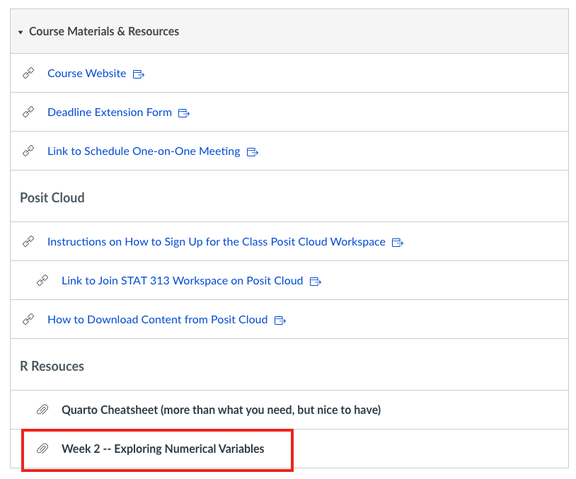

ggplot(data = penguins,
mapping = aes(x = bill_length_mm, y = bill_depth_mm) +
geom_point()Error: <text>:5:0: unexpected end of input
3: geom_point()
4:
^Now that we’ve practiced making some plots, we know…
mapping = aes(y = manufacturer, x = hwy) declares what variables are plotted on the x- and y-axis.
The variable names you put insides aes() must be identical to the names of the variables in the dataset!
. . .
labs(x = "Highway Miles Per Gallon", y = "Car Manufacturer") declares new x-axis and y-axis labels for the plot.
Including nice axis labels (with their units) is a critical part of every visualization we make!
Things you should know before you start coding in the wild.
geom_boxplot() not Geom_boxplot()nycflights not ncyflights( has a counterpart ).. . .
ggplot(data = penguins,
mapping = aes(x = bill_length_mm, y = bill_depth_mm) +
geom_point()Error: <text>:5:0: unexpected end of input
3: geom_point()
4:
^nycflights datasetbinwidthfilter() data to include only certain flightscalculate() summary statistics
is a structured form of small-group learning.
. . .
Roles relate to how the work should be done
. . .
Roles allow each person to contribute to the group in significant ways
Recorder – Manages in-class report
Resource Manager – Manages resources for coding / statistical tasks
Recorder – Manages in-class report
Resource Manager – Evaluates solution strategy
. . .
Helping someone means explaining your thinking not giving answers or doing the work for them
Provide a justification when you make a statement
Think and work together – don’t divide up the work
No cross talk with other groups

Step 1: Both members of your group need to follow these instructions to join your group workspace.
. . .
The person who was assigned to be the group “leader” will act as the Recorder for your group (this week).
. . .
Step 2: The Recorder follows these instructions to copy the Lab 2 project into your group’s workspace
. . .
Step 3: Both members open the Lab 2 assignment in your group workspace!
. . .
Step 4: Follow the final instructions to activate collaborative editing in the document.
